Where this came from
It started with one question.
If your chart describes who you are — what does it sound like? The rest is composing, testing, and listening to members. No robes. No guru. A music company.
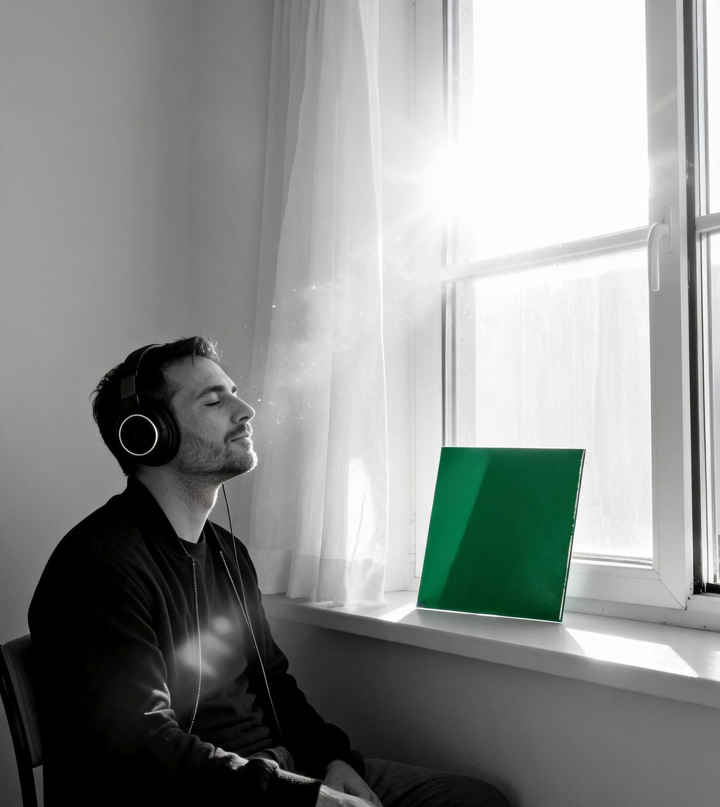
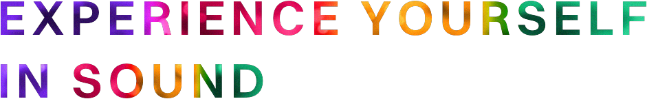
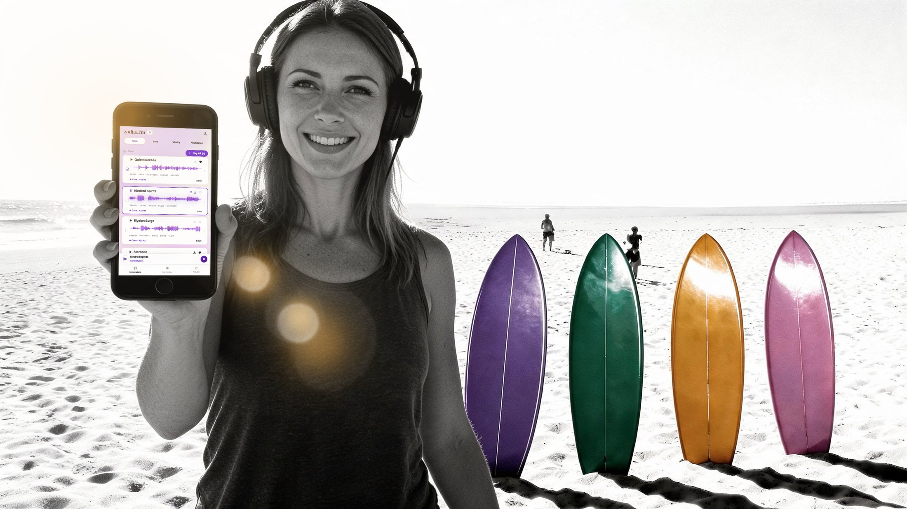
RESET · CALM · DE-STRESS · UNWIND · GROUND
Core · 486.2 Hz
ENERGY · MOTIVATE · BUILD · DRIVE · FLOW
Vitality · 652.4 Hz
Your exact birth moment becomes four personal frequencies, embedded inside music for meditation, visualization, work, or a walk on the beach.
Voices
Neuroscience
“Zodiac.fm helps people access aspects of themselves that have always been there. Through personalized frequencies rather than language alone, it provides another pathway into self-awareness.”
Srini Pillay, M.D.Harvard-trained psychiatrist, brain-imaging researcher
Astrology
“This music tickled my soul and reminded me that there’s such a connection between vibration, the stars and the sounds… you’ll love it.”
Debra SilvermanAstrologer to Sting, Jennifer Aniston, and More
Human Design
“Zodiac core frequencies translate your unique imprint into sound, bypassing the mind and speaking directly to the body.”
Barbara DitlowHuman Design Mentor, certified by Ra Uru Hu, founder of Human Design
Your Unique Frequencies
Every birth moment carries a measurable signature. Zodiac turns yours into four frequencies — one for who you are, one for how you love, one for your energy, one for what you build. Each becomes a piece of music that exists for exactly one person.
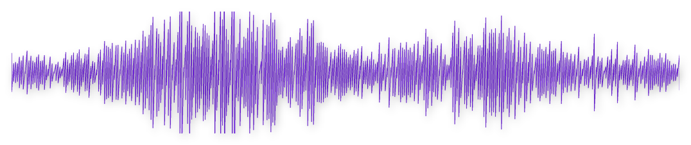

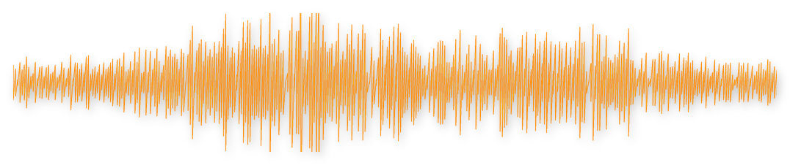
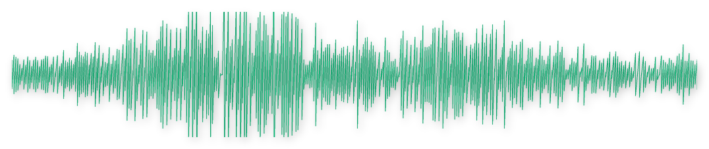
*Sample frequencies. Yours come from your birth date, time, and place.
Where it lives
Your personalized playlist follows your day. A violet street on the morning walk. Brass in the afternoon sun. A rose dress on the laundry line. An emerald ball against the summer sky. The world keeps playing your colors back to you.
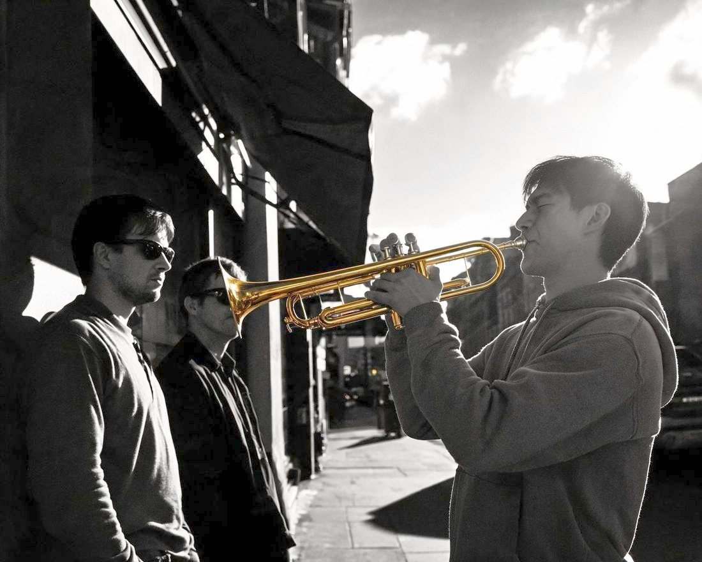
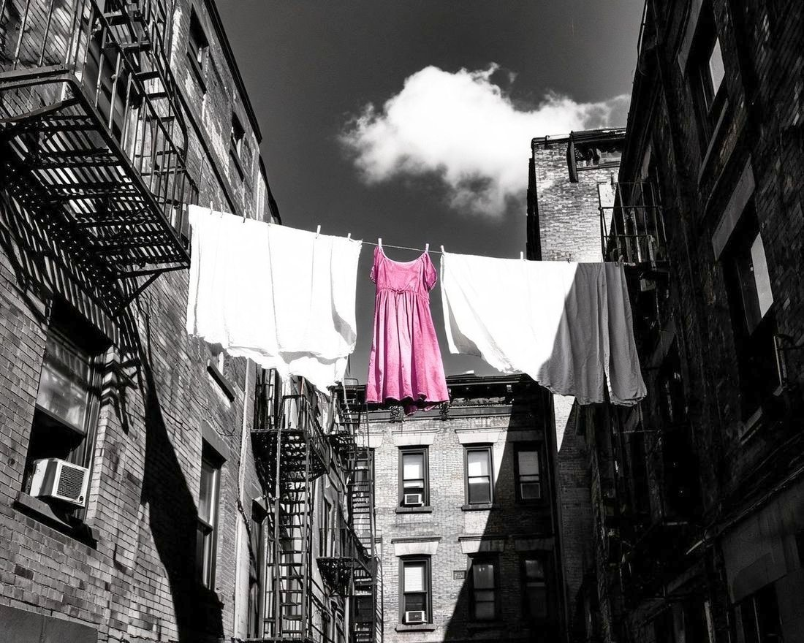
At home, hanging the wash. Love, in the doing.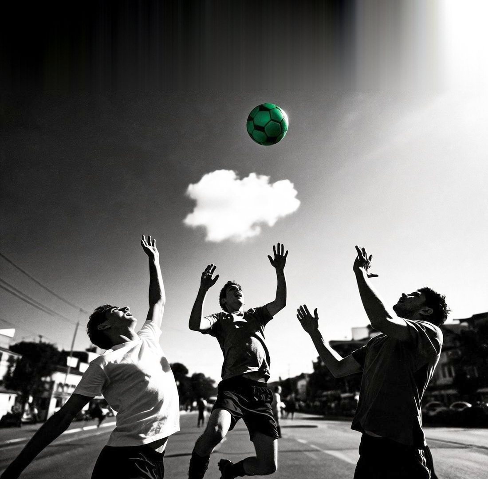
Results
Abundance
“Instead of 10 paid members, I got 30 paid members in 30 days. … It felt like the floodgates of abundance, prosperity, and purpose opened.”
Jennifer K. HillGlobal Wellness Leader, Founder, OptiMatch
Coming home
“I’ve done plant medicine, coaching, ultra-marathons — everything. But this? … I can literally feel the shift when I hit play.”
Todd ShipmanFounder & CEO, Quantum Wellness Leader
Flow
“Having it on in the background while I work has allowed me to slip into my flow state MUCH easier, with a greater sense of calm and ease.”
Alex KikelTrainer to Olympians and Professional Athletes
Identity
“I’m just finishing my first week and I can’t begin to explain how different I feel. I feel like ME — the person I’ve been trying to get back to for so long.”
Amber HedrickZodiac member
Opportunity
“This has been a total game changer for me. … I have received multiple unexpected new very lucrative opportunities since I began tuning in.”
Leanne ElyBest-Selling Author, Founder, Saving Dinner
Nine minutes
“From day 1 I could feel the difference in my energy. … I went from ranting and complaining in my pages to writing in a way that felt hopeful — in only 9 minutes.”
Tangie NadimiFounder, Feel Good Human Design
Ahead of the curve
“Employing vibration and frequency for our well-being is the future. And Zodiac.fm is way ahead of the curve.”
Maya Shetreat, MDAdult and Pediatric Neurologist, Expert Astrologer, Best-Selling Author
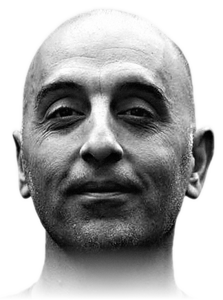
Witnessed
“Zodiac.fm is brilliant. … The transformations I’ve witnessed are remarkable. Highly recommended!”
Dr. Pedram ShojaiBest-Selling Author, The Urban Monk
The invitation
“If you’re tired of living out of tune with yourself, this is your invitation home.”
Rhonda BrittenAuthor of “Fearless Living,” Emmy Award-Winner
“Simply by listening, I feel tuned into a positive frequency zone.”Ai Ninomiya
“It gives me focus and reminds me of who I am.”Rachel Wayte
“It’s like a little cheat code for experiencing your authentic vibration.”David McEwen
“Every time I use this technology, I am coming home.”Alex Nazarov
“This isn’t just sound — it is an energetic recalibration.”Sabrina Truscott
“IT IS PRECISION Frequency!!”Yun Rhee
“I immediately noticed a difference down to the cellular level.”Naomi Fox Reina
“Zodiac.fm works at the frequency level underneath the pattern.”Summer Phoenix
“I have never experienced change in self as I have with this experience.”Paul Tribe
“Two weeks in, I feel more grounded, present, and aligned.”Camille L. Miller
“The cutting-edge tool I didn’t know I needed.”Anja Žibert
The study
of completers said they would recommend Zodiac.
of members who used it as designed for a year called it life-changing.
Our own 52-week internal beta: 300 people started, 278 completed. “As designed” means at least nine minutes a day on average, in balance. We report it exactly that way.
Before you start
The music is composed around your frequencies, and taste is still taste. Some members love their sound on the first listen. Some grow into it.
The closer your birth time, the sharper your frequencies. Most birth certificates carry it. We help you find yours.
One listen is pleasant. A daily practice is where members report the shift. Nine minutes is the dose we studied.
Where this came from
If your chart describes who you are — what does it sound like? The rest is composing, testing, and listening to members. No robes. No guru. A music company.

Come hear it
Zodiac is a paid membership — every straight answer about pricing lives at zodiac.fm.
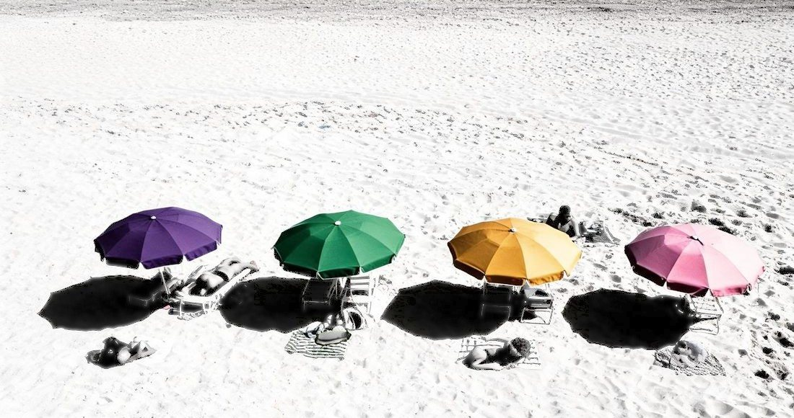